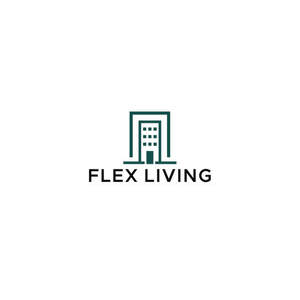

Trade Mark Journal No.2025/017 25 April 2025
UK00004186881 10 April 2025 (24)

- Class 24
- Linen; Linen cloth; Bed linen and table linen; Linen [fabric]; Bed linen; Linen for the bed; Linen (Bed -); Kitchen linen; Bath linen; Mats of linen; Table linen of textile; Linen (Diapered -); Bed linen and blankets; Bed linen of paper; Household linen; Linen (Household -); Table linen; Textiles made of linen; Textile napkins [table linen]; Linens; Infants' bed linen; Bed linen made of non-woven textile material; Linen lining fabric for shoes; Fabrics made from linen, other than for insulation; Bath linen, except clothing; Cot bumpers [bed linen]; Household linen, including face towels; Towels [of textile]; Towels of textile; Towels [textile]; Cotton cloths; Coasters [table linen]; Crib bumpers [bed linen]; Towels of textiles; Table linen, not of paper; Tags of textile for attachment to linen; Labels (Textile -) for marking linen; Kitchen towels [textile]; Kitchen towels of textile; Kitchen towels of cloth; Textile fabrics for use in the manufacture of towels; Linen for household purposes; Cotton fabrics; Bed blankets made of cotton; Cotton fabric; Cotton blankets; Textile tablecloths; Tablecloths of textile; Hand-towels made of textile fabrics; Household linens; Towelling [textile]; Towels [textile] for the beach; Drink coasters of table linen; Glass cloths [towels]; Tablecloths of textiles; Textile fabrics for making into linens; Textile goods for use as bedding; Textile fabrics for use in the manufacture of bedding; Textile fabrics for use in the manufacture of pillowcases; Cloth doilies; Face towels of textile; Textile face towels; Towels [textile] for kitchen use; Towels made of textile materials; Towelling coverlets; Face towels of textiles; Hand towels of textile; Textile fabrics for use in the manufacture of beds; Cotton knitted fabric; Quilts made of terry cloth; Quilted blankets [bedding]; Textiles made of cotton; Curtains made of textile fabrics; Textile fabrics for use in the manufacture of sheets; Cloths of woven textile material for washing the body [other than for medical use]; Textile napkins.
Flex Living LTD